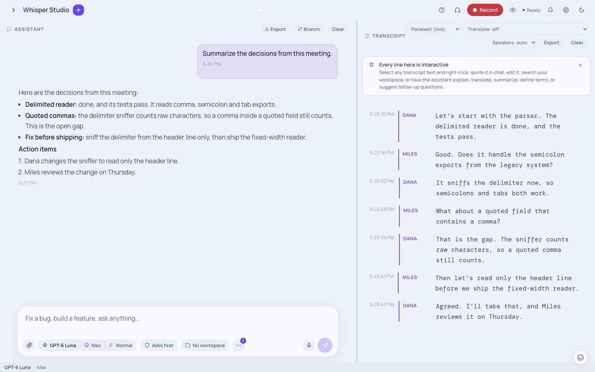

Voice & meetings
Speak a message into the chat box, or record a meeting and get a live transcript with speaker labels. The app transcribes all audio on this Mac.
This page shows the two on-device voice features. Dictation types your speech into the chat box, and it can also send the message when you say a send phrase. Meeting recording writes a full conversation into a separate transcript panel with speaker labels. You can use the two features at the same time.
A spoken conversation with the assistant is a different feature: the "Talk" button in the chat box. Talk sends your audio to Amazon Bedrock. Refer to Talk: voice conversations. Dictation and meeting recording do not send audio from this Mac.

SPEAKER 1 and
SPEAKER 2 to names. Then the chat panel on the left made a summary of the
transcript. The model receives only text, not audio.Dictate a message
The microphone button is in the chat box, between the attach button and the "Talk" button. Its tooltip is "Start dictation".
-
Start dictation
Click the microphone button. If the browser or macOS asks for the microphone permission, click "Allow".
-
Speak
The text shows in the chat box word by word. The app keeps each sentence when the sentence is complete. A hint below the box shows the send phrases.
-
Stop dictation
Click the microphone button again. Its tooltip is now "Stop dictation".
Send the message by voice. End a sentence with a send
phrase: okay send, okay submit, send now,
submit now, send it now, send away, fire
away, or send the message. The app removes the phrase from the text and
sends the message. For example, "summarize the meeting, send now" sends "summarize the
meeting". One word alone ("send") does not send the message.
Dictation uses the Parakeet engine and sends audio in parts of 0.5 s, so the text shows quickly. The meeting recorder sends parts of approximately 1.5 s. Dictation does not identify speakers. Thus, dictation and a meeting recording can run at the same time.
Record a meeting
The "Record" button is at the top right of the window. A live transcript with speaker labels shows in the "Transcript" panel on the right.
-
Click "Record"
If a speech model is not on this Mac, the app downloads it first and shows the progress. Then the recording starts.
-
Allow the microphone
If macOS asks for the microphone permission, click "Allow". In the Mac app, macOS asks for Whisper Studio. In a source install, macOS asks for the terminal app that runs
setup.sh. -
Read the live transcript
Each complete sentence shows as a segment. A lighter "live" row shows the sentence that a person speaks now. The panel follows new text only when you are at the bottom. If you scroll up, an arrow button moves you back to the last line.
-
Click "Stop"
During the recording, the "Record" button changes to "Stop". Click "Stop". The app keeps the last sentence and saves the transcript to the session of the recording.
A recording stays with the session where it started. You can open a different session during the recording. The header then shows a chip with the title of the session that records. Click the chip to go back to that session. Only one session can record at a time.
Record a call. To also record the voices of the other persons in a call, add the audio of this Mac or of one app. Use the headphones button next to "Record". Refer to Record the audio of a call.
Model, translator, and number of speakers
The header of the transcript panel has three menus. You can change each menu during a recording. If you select a model that is not on this Mac, the app downloads it and shows a progress banner. Click "Cancel" on the banner to keep the current model.
| Menu | Options | Function |
|---|---|---|
| Model | "Whisper Large v3", "Parakeet (live)" | Whisper has the best accuracy and knows 99 languages. It transcribes a full sentence at each pause. Parakeet is the default. It shows words with the shortest delay and knows 25 European languages. |
| Translate | "Translate: off", "Canary (25 langs ↔ EN)", "Apple (any pair)", and a menu for the target language | Adds a translation below each complete line. Canary translates between its 25 languages and English, in the two directions. Apple uses the translator of macOS on this Mac. Refer to Translate during a recording. |
| Speakers | "Speakers: auto", or "1 speaker" to "8 speakers" | A value for the speaker labels. With "auto", the app calculates the number from the audio. If you give the correct number, the speaker labels are more accurate. |
Meetings in more than one language
There is no language setting. Whisper finds the language of each sentence. Parakeet transcribes its 25 languages, but it does not identify the language. When Canary translates a Parakeet line, a small language classifier on this Mac finds the source language. For a language that Parakeet does not know, use Whisper.
Translate during a recording
When you select a translator, each complete segment gets a second line. The second line is the translation, with a language badge in uppercase. During the translation, the line shows "Translating…". The app keeps the original text and the translation. The "Export" button of the transcript panel writes the two lines.
| Translator | Languages | Where it runs |
|---|---|---|
| Canary | 25 European languages to English, and English to these languages | On the local server. It works in the Mac app and in a browser tab. |
| Apple | Any pair of its 20 languages, approximately. macOS downloads each language pack one time. | Only in the Mac app on macOS 15 or later. In a source install and on macOS 14, the option shows "Apple (needs the Mac app on macOS 15 or later)" and you cannot select it. |
Which translator? Use Canary when English is one of the two languages. Use Apple in the Mac app for a pair without English, or for a language that Canary does not know. Both translators run on this Mac. No audio or text goes out of this Mac.
To correct a word that the model heard incorrectly, edit the segment:
Open the editor
Double-click the segment.
Correct the text
Type the correct text, and then press Enter.
Read the new translation
In the Mac app on macOS 15 or later, Apple translates the corrected text again. In other installs, the app removes the old translation, because the old translation is not correct.
Speaker labels and names
The app identifies the speakers on this Mac. It gives each segment a label, for example
Speaker 1 or Speaker 2. Lines in sequence from the same speaker
become one segment. During a long recording, the app can change labels that it gave
before.
To give a speaker a name, click the speaker label. The tooltip is "Click to rename". Type the name, for example Maya. The app shows the name on all the lines of that speaker in this recording.
Names in the next recordings
By default, a name applies only to the current recording. In the next recording, the same
person is Speaker 1 again. To recognize named speakers in the next recordings, set
speaker_voiceprints to true in config.user.json. Then a new name also saves a voiceprint of that
speaker. In the next recordings, the app shows the name when it finds the same voice. The app
does not show a name when the match is not certain.
Two persons who speak at the same time
A sentence ends at silence, not at a change of speaker. Thus, a fast change of speaker can be inside one sentence. The app divides the sentence at the change and gives each part its speaker. When there is no silence between the two voices, the segment shows a mark. The tooltip of the mark starts with "Overlapping turn". The first words of that segment can belong to the two speakers.
The division uses the word times that Whisper and Parakeet give. To stop the division, set
speaker_split_turns to false.
A quiet microphone. The app increases the level of quiet speech before the speech detector reads it. Thus, the detector does not read soft speech as silence. The app only increases the level. Room noise does not change the level.
Each transcript line has a menu. Select text in the panel and right-click. The menu has these items: "Copy", "Copy with speaker prefix", "Quote in chat input", "Edit segment text", "Search workspace for this", "Explain", "Translate to English", "Summarize", "Suggest follow-up questions", and "Define key terms".
The audio stays on this Mac
The app sends the audio to the local server on this Mac. An engine on this Mac transcribes the audio. No audio goes to a cloud service. Claude receives the transcript text only when you send a chat message, and never the audio. Only the "Talk" feature sends audio from this Mac. Refer to Transcription & diarization and Talk: voice conversations.
Make a summary of a recording
The transcript is in the session. Thus, you can ask Claude questions on the transcript in the chat. For example:
Summarize the discussion and list action items per speaker.The app has three types of summary. You do not select them from a menu. Ask in usual words, and the model selects the related tool:
| Ask for | Result |
|---|---|
| A short summary | A summary in one of four styles: action items, meeting notes, key points, or a brief. Name the style, for example "give me the key points". |
| Full meeting notes | An overview, the decisions, a table of owner, action, and deadline, the discussion points, the blockers, and the next steps. Ask for "proper meeting notes". |
| A recap | A recap for a person who joined late, and questions to ask next. Ask "catch me up on this meeting". |
Long meetings. A recording of many hours can be too long for the model to read at one time. The app makes the transcript shorter before the summary. It does not remove parts without a notice. Refer to the condensation steps.
More examples: "What did we decide about the launch date?", "Draft a follow-up email to
the team", or "List every open question raised in this call". To save the chat and the
summary as a text file, type /export. Refer to Your
first chat.
The "Export" button of the transcript panel saves only the transcript as a text file. Each line starts with its speaker. Use this file when you do not use the chat.
Record the audio of a call (Zoom, Meet, and other apps)
By default, "Record" uses the microphone. The microphone records your voice and the sound in the room. It does not record the audio that the other persons send to your speakers. To add that audio, use the "Audio sources" menu. The headphones button next to "Record" opens it.
Select the sources before you start. To change the sources, stop the recording first.
The "This Mac" section of the menu is available in the Mac app and in a source install.
The Mac app captures the audio with its own code. In a source install, setup.sh
builds a capture helper from the same code. The local server connects the helper to the
browser page.
Add the audio of this Mac or of one app
-
Start the call
Start the call or the video first. The menu shows only the apps that play audio.
-
Open "Audio sources"
Click the headphones button next to "Record". The app finds the apps that play audio each time that you open the menu.
-
Select a source
In the "This Mac" section, click "Use" on "System audio" to record all the audio of this Mac. Or, select one app, for example Zoom, to record only that app.
-
Optional: stop the microphone
When a "This Mac" source is selected, the "Microphone" row has a "Turn off" button. Click it to record only the call, without room noise.
-
Click "Record"
If macOS asks for the System Audio Recording permission, click "Allow". In a source install, macOS asks for the terminal app.
During the recording, the selected source shows a level meter. The header shows the mix, for example "Mic + System audio" or "Mic + Zoom". The app keeps your selection for the next recording. Use headphones, so that the microphone does not record the call audio a second time.
If the menu shows no "This Mac" section
When the capture helper is not connected, the menu shows "Chrome tab audio" in place of "This Mac". This option records the audio of one browser tab, and it works only in Chrome and Edge. Click "Choose tab", select the tab, and select "Also share tab audio" in the browser dialog.